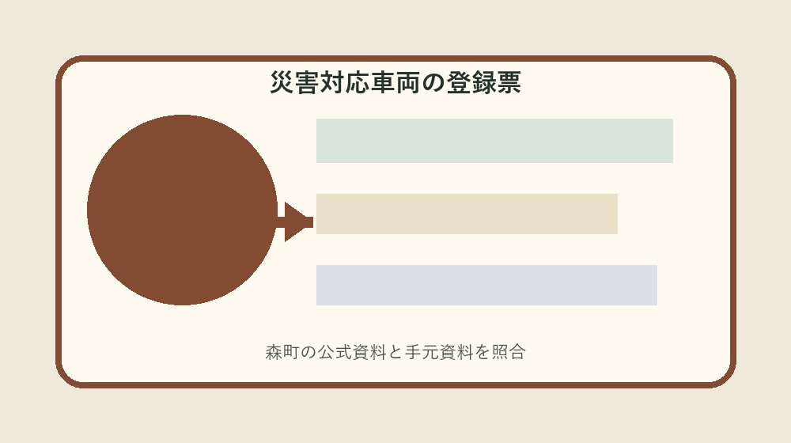
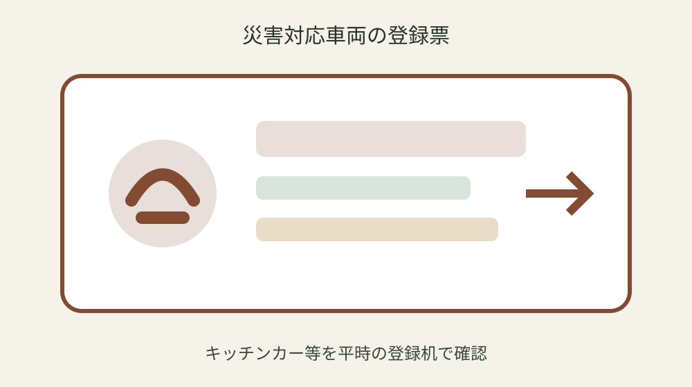
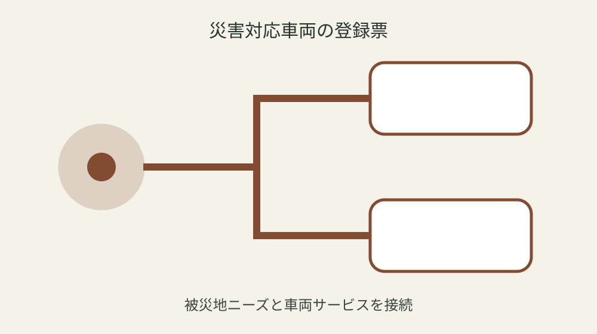

森町から確認する災害対応車両登録｜車両・サービス・派遣条件を平時に整理する

結論：災害対応車両登録確認票へ対象・基準日・手元資料・未確認事項を分け、最初の一問だけを森町へ確認します。制度は令和7年6月1日から運用開始を起点に、実行直前の再確認までを一続きにしてください。
車両の所有者と運用者を分ける
車両の所有者と運用者を分けるでは、まず「制度は令和7年6月1日から運用開始」という森町公式の条件を起点にします。災害対応車両登録確認票には対象、日付、資料名、確認日を別欄で置き、制度名だけのメモにしません。手元の現物と公式説明が食い違う場合は、都合のよい方へ寄せず、差がある状態をそのまま残します。
実際の確認は、現物を見る人、電話する人、記録する人を決めてから始めます。被災自治体のニーズに応じた支援を目的とするも同じ行へ書き、登録だけで派遣確約と考えることを避けます。数字や固有名は読み上げて照合し、不明欄には推定値ではなく「未確認」と次の確認先を記します。 この判断も災害対応車両登録確認票の更新対象です。
森町へ尋ねるときは「車両の所有者と運用者を分けるについて、手元ではここまで確認した」と一文で伝えます。そのうえでコンテナ型やトレーラー型も対象が自分の案件にどう当てはまるかを一問だけ確認します。回答日、担当部署、再確認が必要な時期まで記録すれば、家族や同僚が同じ質問を繰り返さずに済みます。 この判断も災害対応車両登録確認票の更新対象です。
災害対応車両登録確認票の更新では旧版を消しません。トイレ・ランドリー・シャワートレーラーが例示されるを採用した根拠、変更前の記載、変更した日を並べます。公式ページの更新や個別事情で結論が変わることがあるため、実行直前に最新案内を見直し、確認できない場合は作業を一段止めます。
提供できるサービスを一つずつ書く
提供できるサービスを一つずつ書くでは、まず「能登半島地震の教訓を踏まえた制度」という森町公式の条件を起点にします。災害対応車両登録確認票には対象、日付、資料名、確認日を別欄で置き、制度名だけのメモにしません。手元の現物と公式説明が食い違う場合は、都合のよい方へ寄せず、差がある状態をそのまま残します。
実際の確認は、現物を見る人、電話する人、記録する人を決めてから始めます。避難所・住まい・食事・洗濯・入浴サービスが対象も同じ行へ書き、現地インフラを当然に使えると思うことを避けます。数字や固有名は読み上げて照合し、不明欄には推定値ではなく「未確認」と次の確認先を記します。 この判断も災害対応車両登録確認票の更新対象です。
森町へ尋ねるときは「提供できるサービスを一つずつ書くについて、手元ではここまで確認した」と一文で伝えます。そのうえでキッチンカーが例示されるが自分の案件にどう当てはまるかを一問だけ確認します。回答日、担当部署、再確認が必要な時期まで記録すれば、家族や同僚が同じ質問を繰り返さずに済みます。 この判断も災害対応車両登録確認票の更新対象です。
災害対応車両登録確認票の更新では旧版を消しません。キャンピングカーも例示されるを採用した根拠、変更前の記載、変更した日を並べます。公式ページの更新や個別事情で結論が変わることがあるため、実行直前に最新案内を見直し、確認できない場合は作業を一段止めます。
自走・牽引・運搬形態を確認する
自走・牽引・運搬形態を確認するでは、まず「平時から車両等をデータベース化する」という森町公式の条件を起点にします。災害対応車両登録確認票には対象、日付、資料名、確認日を別欄で置き、制度名だけのメモにしません。手元の現物と公式説明が食い違う場合は、都合のよい方へ寄せず、差がある状態をそのまま残します。
実際の確認は、現物を見る人、電話する人、記録する人を決めてから始めます。自走型だけでなく運搬・牽引型も対象も同じ行へ書き、車両寸法と道路条件を記録しないことを避けます。数字や固有名は読み上げて照合し、不明欄には推定値ではなく「未確認」と次の確認先を記します。 この判断も災害対応車両登録確認票の更新対象です。
森町へ尋ねるときは「自走・牽引・運搬形態を確認するについて、手元ではここまで確認した」と一文で伝えます。そのうえでトレーラーハウスやムービングハウスが例示されるが自分の案件にどう当てはまるかを一問だけ確認します。回答日、担当部署、再確認が必要な時期まで記録すれば、家族や同僚が同じ質問を繰り返さずに済みます。 この判断も災害対応車両登録確認票の更新対象です。
災害対応車両登録確認票の更新では旧版を消しません。登録は国のD-TRACEサイトから行うを採用した根拠、変更前の記載、変更した日を並べます。公式ページの更新や個別事情で結論が変わることがあるため、実行直前に最新案内を見直し、確認できない場合は作業を一段止めます。
電源・水・燃料の前提を列挙する
電源・水・燃料の前提を列挙するでは、まず「被災自治体のニーズに応じた支援を目的とする」という森町公式の条件を起点にします。災害対応車両登録確認票には対象、日付、資料名、確認日を別欄で置き、制度名だけのメモにしません。手元の現物と公式説明が食い違う場合は、都合のよい方へ寄せず、差がある状態をそのまま残します。
実際の確認は、現物を見る人、電話する人、記録する人を決めてから始めます。コンテナ型やトレーラー型も対象も同じ行へ書き、登録だけで派遣確約と考えることを避けます。数字や固有名は読み上げて照合し、不明欄には推定値ではなく「未確認」と次の確認先を記します。 この判断も災害対応車両登録確認票の更新対象です。
森町へ尋ねるときは「電源・水・燃料の前提を列挙するについて、手元ではここまで確認した」と一文で伝えます。そのうえでトイレ・ランドリー・シャワートレーラーが例示されるが自分の案件にどう当てはまるかを一問だけ確認します。回答日、担当部署、再確認が必要な時期まで記録すれば、家族や同僚が同じ質問を繰り返さずに済みます。 この判断も災害対応車両登録確認票の更新対象です。
災害対応車両登録確認票の更新では旧版を消しません。制度は令和7年6月1日から運用開始を採用した根拠、変更前の記載、変更した日を並べます。公式ページの更新や個別事情で結論が変わることがあるため、実行直前に最新案内を見直し、確認できない場合は作業を一段止めます。

必要な設置面積と進入条件を測る
必要な設置面積と進入条件を測るでは、まず「避難所・住まい・食事・洗濯・入浴サービスが対象」という森町公式の条件を起点にします。災害対応車両登録確認票には対象、日付、資料名、確認日を別欄で置き、制度名だけのメモにしません。手元の現物と公式説明が食い違う場合は、都合のよい方へ寄せず、差がある状態をそのまま残します。
実際の確認は、現物を見る人、電話する人、記録する人を決めてから始めます。キッチンカーが例示されるも同じ行へ書き、現地インフラを当然に使えると思うことを避けます。数字や固有名は読み上げて照合し、不明欄には推定値ではなく「未確認」と次の確認先を記します。 この判断も災害対応車両登録確認票の更新対象です。
森町へ尋ねるときは「必要な設置面積と進入条件を測るについて、手元ではここまで確認した」と一文で伝えます。そのうえでキャンピングカーも例示されるが自分の案件にどう当てはまるかを一問だけ確認します。回答日、担当部署、再確認が必要な時期まで記録すれば、家族や同僚が同じ質問を繰り返さずに済みます。 この判断も災害対応車両登録確認票の更新対象です。
災害対応車両登録確認票の更新では旧版を消しません。能登半島地震の教訓を踏まえた制度を採用した根拠、変更前の記載、変更した日を並べます。公式ページの更新や個別事情で結論が変わることがあるため、実行直前に最新案内を見直し、確認できない場合は作業を一段止めます。
運転者と交代要員を登録する
運転者と交代要員を登録するでは、まず「自走型だけでなく運搬・牽引型も対象」という森町公式の条件を起点にします。災害対応車両登録確認票には対象、日付、資料名、確認日を別欄で置き、制度名だけのメモにしません。手元の現物と公式説明が食い違う場合は、都合のよい方へ寄せず、差がある状態をそのまま残します。
実際の確認は、現物を見る人、電話する人、記録する人を決めてから始めます。トレーラーハウスやムービングハウスが例示されるも同じ行へ書き、車両寸法と道路条件を記録しないことを避けます。数字や固有名は読み上げて照合し、不明欄には推定値ではなく「未確認」と次の確認先を記します。 この判断も災害対応車両登録確認票の更新対象です。
森町へ尋ねるときは「運転者と交代要員を登録するについて、手元ではここまで確認した」と一文で伝えます。そのうえで登録は国のD-TRACEサイトから行うが自分の案件にどう当てはまるかを一問だけ確認します。回答日、担当部署、再確認が必要な時期まで記録すれば、家族や同僚が同じ質問を繰り返さずに済みます。 この判断も災害対応車両登録確認票の更新対象です。
災害対応車両登録確認票の更新では旧版を消しません。平時から車両等をデータベース化するを採用した根拠、変更前の記載、変更した日を並べます。公式ページの更新や個別事情で結論が変わることがあるため、実行直前に最新案内を見直し、確認できない場合は作業を一段止めます。
派遣可能地域と日数を決める
派遣可能地域と日数を決めるでは、まず「コンテナ型やトレーラー型も対象」という森町公式の条件を起点にします。災害対応車両登録確認票には対象、日付、資料名、確認日を別欄で置き、制度名だけのメモにしません。手元の現物と公式説明が食い違う場合は、都合のよい方へ寄せず、差がある状態をそのまま残します。
実際の確認は、現物を見る人、電話する人、記録する人を決めてから始めます。トイレ・ランドリー・シャワートレーラーが例示されるも同じ行へ書き、登録だけで派遣確約と考えることを避けます。数字や固有名は読み上げて照合し、不明欄には推定値ではなく「未確認」と次の確認先を記します。 この判断も災害対応車両登録確認票の更新対象です。
森町へ尋ねるときは「派遣可能地域と日数を決めるについて、手元ではここまで確認した」と一文で伝えます。そのうえで制度は令和7年6月1日から運用開始が自分の案件にどう当てはまるかを一問だけ確認します。回答日、担当部署、再確認が必要な時期まで記録すれば、家族や同僚が同じ質問を繰り返さずに済みます。 この判断も災害対応車両登録確認票の更新対象です。
災害対応車両登録確認票の更新では旧版を消しません。被災自治体のニーズに応じた支援を目的とするを採用した根拠、変更前の記載、変更した日を並べます。公式ページの更新や個別事情で結論が変わることがあるため、実行直前に最新案内を見直し、確認できない場合は作業を一段止めます。

平時の更新担当を固定する
平時の更新担当を固定するでは、まず「キッチンカーが例示される」という森町公式の条件を起点にします。災害対応車両登録確認票には対象、日付、資料名、確認日を別欄で置き、制度名だけのメモにしません。手元の現物と公式説明が食い違う場合は、都合のよい方へ寄せず、差がある状態をそのまま残します。
実際の確認は、現物を見る人、電話する人、記録する人を決めてから始めます。キャンピングカーも例示されるも同じ行へ書き、現地インフラを当然に使えると思うことを避けます。数字や固有名は読み上げて照合し、不明欄には推定値ではなく「未確認」と次の確認先を記します。 この判断も災害対応車両登録確認票の更新対象です。
森町へ尋ねるときは「平時の更新担当を固定するについて、手元ではここまで確認した」と一文で伝えます。そのうえで能登半島地震の教訓を踏まえた制度が自分の案件にどう当てはまるかを一問だけ確認します。回答日、担当部署、再確認が必要な時期まで記録すれば、家族や同僚が同じ質問を繰り返さずに済みます。 この判断も災害対応車両登録確認票の更新対象です。
災害対応車両登録確認票の更新では旧版を消しません。避難所・住まい・食事・洗濯・入浴サービスが対象を採用した根拠、変更前の記載、変更した日を並べます。公式ページの更新や個別事情で結論が変わることがあるため、実行直前に最新案内を見直し、確認できない場合は作業を一段止めます。
良い点
災害対応車両登録確認票に確認済み事実と未確認事項を分けると、制度の対象外を恐れて何もしない状態から、次の一問を決める状態へ進めます。
平時から車両等をデータベース化するという具体条件を家族で共有でき、担当が替わっても根拠をたどれます。
期限、現物、回答日が一枚に集まり、書類の取り直しと問い合わせの重複を減らせます。
公式資料だけで断定できない個別条件を未確認として残せることも、この方法の利点です。
注文したい点
森町の案内には制度条件が整理されていますが、初めて手続きをする人には、個別案件の順番が読み取りにくい部分があります。
登録だけで派遣確約と考えることを避けるため、記入例や受付後の流れも同じページから確認できるとさらに使いやすくなります。
年度更新時には変更箇所と変更日が目立つ表示になると、保存した旧資料との取り違えを減らせます。
これは現行制度の否定ではなく、利用者が正しい窓口へ一度で到達するための改善要望です。
対案・結論
結論は、災害対応車両登録確認票を今日一枚作り、最初の未確認欄だけを森町へ尋ねることです。
全条件を一度に覚えず、公式事実、手元資料、窓口回答、次の期限を四列に分けます。
避難所・住まい・食事・洗濯・入浴サービスが対象を確認しても、個別可否は案件ごとに変わり得るため、支出や申請の直前に再確認します。
確認が終わったら旧版を残し、次回の担当が同じ根拠から続けられる状態を完成とします。
大石の視点
ここまでの制度条件は森町公式資料から確認した事実です。以下は私、大石浩之の実務提案であり、森町の公式見解ではありません。
私は災害対応車両登録確認票を紙一枚から始め、原本を動かさず、写真や写しへ番号を付ける方法を勧めます。
未確認欄は失敗ではありません。確認先と期限のある空欄は、根拠のない推測より実用的です。
個人情報を含む場合は内部保管版と提出版を分け、必要な範囲だけを相手へ渡してください。
よくある質問
災害対応車両登録確認票は何から始めますか。
対象者または対象物、基準日、手元資料を一行にし、最初の公式条件「制度は令和7年6月1日から運用開始」と照合します。
資料が足りなくても災害対応車両登録確認票を作れますか。
作れます。不足欄を推測で埋めず、必要資料、確認先、期限を書けば、後から安全に再開できます。
公式ページを一度保存すれば十分ですか。
十分ではありません。能登半島地震の教訓を踏まえた制度などの条件は更新される場合があるため、実行直前に現行ページを確認します。
家族や担当者へ渡すとき何を添えますか。
確認済み事実、未確認事項、次の担当、期限、原本保管場所、町へ尋ねた日と回答を添えます。
公式情報源
- 災害対応車両の登録制度（2026年8月20日確認）
- 森町地域防災計画（2026年8月20日確認）

最終確認日：2026-08-20 ／ 公表事実と執筆者の解釈・意見を分けて記載しています。